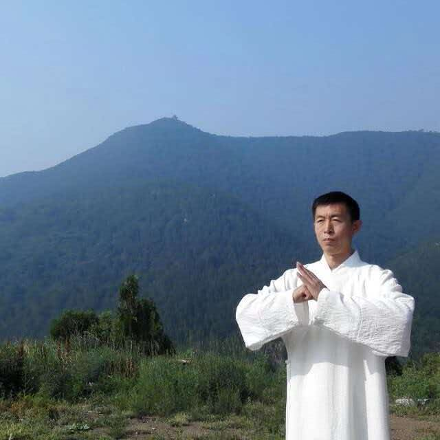

双脉 · 其一
泉派中医
以中形医学统方药、触诊、推拿、罐、灸。
- 方药
- 触诊
- 推拿
- 罐
- 灸
Our Heritage
中气为本 · 一气周流
久真堂，由清代医家黄元御创立，远宗明代五大医家，以“中气为本、一气周流”为核心。当代由黄氏同宗后裔黄忠强接续传承，双脉并承：一为泉派中医，以中形医学统方药、触诊、推拿、罐、灸；一为新九针，承古针、针刀与正骨，专治筋骨痹痛。本堂融形、气、针、药，尊古而善变通，志在传守医道本真，惠及天下。
以中形医学统方药、触诊、推拿、罐、灸。
承古针、针刀与正骨，专治筋骨痹痛。
尊古而善变通 · 传守医道本真
About

返本归元黄忠强，字德明，号黄药师 —— 武医 · 雪岭守护者 · 金针济世
山西省省级非物质文化遗产代表性传承人（泉派中医 · 新九针疗法），古传形意拳第七代嫡传传人，北京广仁堂中医研究院执行院长。
师从王文德、李亮、余成麟诸先生，习新九针，兼及河洛针法；从张大辉先生习孙式太极。并兼修峨眉点穴（指压法）、道家针法与太上玄灵门调神法。
主张绿色非药物疗法优先——运动、正骨、金针；以“形·气·神”三层诊断看人，以运动处方把调理延伸到日常。曾在古传形意拳论坛、全国九针临床交流会上分享经验。
【待补充：传承谱系图（可选）】
幼年随父站桩，父亲以一根枪杆校正身形。桩功与呼吸，自此成为一生的底子。
就读山西中医药大学，系统研习中医理论；寻访南怀瑾先生旧居与隐修之处，背着针包走进山里。
临床三十余年，坚持武医结合；每日门诊之前，先行晨间站桩调息。
The Nine Needles
九针之名，出自《黄帝内经·灵枢》。《九针十二原》《九针论》记述了九种形制、长短、用途各异的针具，“各不同形，各以任其所宜”。久真堂新九针一脉，溯源古制、守正创新。点击卡片可阅读原文摘句。
形制与长度据《灵枢·九针十二原》。后世对应仅为学界常见观点，供文化了解。
九针各司其职，“针各有所宜”。针为器，道在人。
《灵枢》言“粗守形，上守神”。用针之要，先在调神。
武以强身，医以济人。导引吐纳与针道同出一源。
Inheritance
从《黄帝内经》到联合国教科文组织名录，针灸之学两千余年薪火不绝。
分《素问》《灵枢》两部。《灵枢》又称《针经》，系统记述经络、腧穴与九针，为针灸学奠基。
现存最早的针灸学专著，系统整理腧穴与针法。
载“阿是”取穴之法，绘明堂三人图，倡“大医精诚”之医德。
官修腧穴标准，并铸针灸铜人用于教学与考核。
以十二经合任督二脉为“十四经”，经穴体系更趋完备。
集明以前针灸之大成，流传极广。
针灸列入第一批国家级非物质文化遗产名录（传统医药类）。
联合国教科文组织将“中医针灸”列入人类非物质文化遗产代表作名录。
《黄帝内经》与《本草纲目》入选联合国教科文组织《世界记忆名录》。
远宗明代五大医家，以“中气为本、一气周流”为核心。
黄氏同宗后裔黄忠强接续传承，双脉并承：泉派中医与新九针。【待补充：传承谱系与代际】
Health Preservation
《素问》云：“法于阴阳，和于术数，食饮有节，起居有常，不妄作劳。”养生不在一时，在于日常。
顺四时而适寒暑。如霜降重在一个“收”字：早卧早起，收敛神气；可日常按揉足三里、太溪，以养脾肾。
近期：霜降 · 深秋安眠导引吐纳，动静相兼。八段锦舒展筋骨、调和呼吸；黄药师每日门诊前亦以站桩调息为功课——武医同源，功在日常。
武医同源五谷为养，五果为助。深秋燥气当令，可选百合、莲子、红枣、小米等温和食材，饮食清淡有度。
食养睡前温水泡脚、按揉神门与内关、缓慢呼吸（吸四呼六），帮身体从“外放”转入“内收”。
安神小流程以上为中医养生文化科普，个人体质不同，如有不适请及时就医。
Clinical Focus
先看形，再察气，终守神。以下为黄药师的诊疗思路与临床专长方向，属文化与方法介绍，不作疗效承诺。
看筋骨、姿态、脊柱与关节——身体的结构与力线。
察呼吸、经络与气机的通滞——身体的运行状态。
观精神魂魄意——情志、睡眠与心神的安定。
以金针为主，配合运动处方，关注疼痛背后的“形”与“气”。
以正骨、金针与桩功、导引相结合，调整结构，再以运动维持。
运用太上玄灵门调神针法，常取百会、神庭、内关、太冲等穴，重在调神。
绿色非药物疗法优先：运动 · 正骨 · 金针
【真实案例待授权补充】
Courses
黄药师在广仁堂授课：从桩功、呼吸入门，到太极技法与九针理论。课程以文化传习与系统学习为主，不替代面诊。
从幼年随父站桩而来的功课。立身中正，松静自然，是武与医共同的根。
晨间站桩调息，是黄药师每日门诊前的功课。以息调气，以气养神。
承张大辉先生所授孙式太极，讲练结合，体会武医同源。
溯《灵枢》九针古制，讲新九针疗法理论。经络科普视频《久真堂新九针》（已有：手太阴肺经、手阳明大肠经、手厥阴心包经）可作配套。
Contact
欢迎来访交流。授课与诊疗请提前预约，面诊为准。
微信扫码 · 添加久真堂 黄药师
点击信息可复制